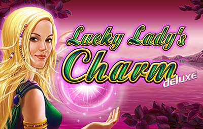

Gates of OlympusPragmatic Play
Gates of OlympusPragmatic Play Royal Fruits 5Amatic
Royal Fruits 5Amatic Sweet Bonanza 1000Pragmatic Play
Sweet Bonanza 1000Pragmatic Play Book of Ra MagicNovomatic
Book of Ra MagicNovomatic Chicken CoinWazdan
Chicken CoinWazdan Fruit MillionNetEnt
Fruit MillionNetEnt Book of the FallenPragmatic Play
Book of the FallenPragmatic Play Ultra Hot SevensAmatic
Ultra Hot SevensAmatic Joker’s JewelsPragmatic Play
Joker’s JewelsPragmatic Play Crown CoinsSlot
Crown CoinsSlot Dolphin’s PearlNovomatic
Dolphin’s PearlNovomatic
Lucky Lady’s CharmNovomaticCerchi ancora Chancebet Casino ? Stando alla comunicazione ufficiale, saldo e promozioni attive passano in automatico, mentre il team e i giochi non si toccano. Dietro c'è Vittoria Bet 2009 S.r.l., società italiana in attività dal 2009 e titolare della concessione ADM GAD 16046.
Questa informazione riguarda il servizio storico Chancebet. Le offerte operative disponibili oggi sono raccolte nel confronto della pagina.
Chancebet Casino: panoramica e recensione
Chancebet metteva sul piatto un'offerta completa per il pubblico italiano, divisa tra casinò online, poker, bingo, lotterie e scommesse sportive. Il catalogo sfiorava i 3.000 titoli, mentre il palinsesto betting copriva 28 discipline, eSports compresi: League of Legends, CS2 e Dota 2.
A gestire il tutto è Vittoria Bet 2009 S.r.l. , P.IVA 12027280960 e sede registrata in Viale della Libertà 106, 95129 Catania (CT).
Lato sport, una fonte terza ha stimato per il calcio un payout del 93,8%, sopra la media italiana che si aggira sul 91–92%. Un dato interessante se punti spesso su Serie A, coppe europee e campionati esteri. Attenzione però: non è una garanzia sulle singole quote, che cambiano in base all'evento e al mercato.
Il cambio di nome all'inizio può spiazzare, ma non stai aprendo un conto da zero presso uno sconosciuto: società, assistenza e proposta di gioco restano agganciati alla struttura di prima.
Licenza, sicurezza e affidabilità
L'operatività attuale è legata alla concessione ADM GAD 16046, intestata a Vittoria Bet 2009 S.r.l. La concessione dell'Agenzia delle Dogane e dei Monopoli, un tempo AAMS, è il requisito senza cui non puoi offrire legalmente gioco a distanza in Italia. Punto.
I riferimenti societari dichiarati sono questi:
- Operatore: Vittoria Bet 2009 S.r.l.
- P.IVA: 12027280960
- Concessione ADM: GAD 16046
- Sede: Viale della Libertà 106, 95129 Catania (CT)
- Certificazioni: ISO 9001:2015, ISO 14001:2015 e ISO 26000
A proteggere comunicazioni e dati c'è la crittografia SSL. Resta comunque a te fare la tua parte: password unica, credenziali mai a terzi e un controllo veloce di essere sul sito giusto prima di caricare documenti o dati di pagamento.
Si gioca solo se maggiorenni. Come per ogni concessionario ADM, hai a disposizione gli strumenti di gioco responsabile, dai limiti di deposito all'autoesclusione. Slot, roulette e scommesse comportano un rischio economico vero: fissa il budget prima di iniziare, e che non sia mai il denaro delle spese di casa.
Catalogo dei giochi Chancebet
La sezione Chancebet giochi contava quasi 3.000 titoli tra slot e giochi da tavolo.
Le categorie principali:
- slot machine classiche e video slot;
- roulette;
- blackjack;
- baccarat;
- poker;
- bingo;
- keno;
- Gratta e Vinci digitali.
Tra i provider documentati spuntano NetEnt ed Espresso, software house note per slot, giochi da tavolo e contenuti pensati anche per il mobile. Il numero effettivo di titoli può ballare: aggiornamenti del catalogo, manutenzione o scelte commerciali del concessionario. La disponibilità esatta di sezioni come live casino, giochi con croupier dal vivo o demo va comunque verificata direttamente nella piattaforma dopo il passaggio.
In una libreria così vasta, filtri e categorie diventano tuoi alleati. Prima di puntare dai un'occhiata a tabella dei pagamenti, RTP, volatilità e limiti della singola partita. Ricorda che l'RTP si calcola su un numero enorme di giocate e non ti dice nulla su come andrà una sessione breve.
Accanto al casinò trovano posto poker cash, bingo e offerta sportiva. Il palinsesto copre 28 sport e include eventi eSports su titoli come LoL, Counter-Strike 2 e Dota 2. Mercati, quote e disponibilità live seguono il calendario del momento.
Bonus e promozioni Chancebet
Una delle promo più riconoscibili era il cashback tra il 15% e il 25%, calcolato sulla differenza fra importo giocato e importo vinto. I coupon arrivavano il giorno 3 di ogni mese, con un tetto massimo di 750 €.
Le condizioni principali erano queste:
- validità di un mese per i coupon slot;
- validità di 7 giorni per i coupon scommesse;
- niente giocate a sistema;
- prelevabili le vincite, non direttamente il coupon;
- per le scommesse, quota minima 2.00 e almeno cinque puntate al mese;
- per il casinò, conteggio limitato alle slot;
- per il poker, valida solo la modalità cash.
Il bonus di benvenuto chiedeva un rollover pari a 35 volte l'importo indicato dalle condizioni. Bello tosto, diciamolo: prima di accettarlo controlla quali giochi contribuiscono, l'eventuale puntata massima e il tempo che hai per completarlo.
Le campagne però possono cambiare o essere sospese; quindi, prima di depositare, verifica nell'area personale che percentuale, scadenza e requisiti siano ancora validi.
Metodi di pagamento: depositi e prelievi
L'offerta includeva strumenti molto diffusi in Italia: PostePay, bonifico bancario ed e-wallet.
Depositi
| Metodo | Minimo e massimo | Accredito | Costi |
|---|---|---|---|
| Bonifico bancario | Non indicati | Dipende dalla banca | Da verificare |
| Skrill | Non indicati | Generalmente rapido | Da verificare |
| Rapid Transfer by Skrill | Non indicati | Generalmente rapido | Da verificare |
| Neteller | Non indicati | Generalmente rapido | Da verificare |
| Bollettino postale | Non indicati | Non immediato | Da verificare |
| Nuvei | Non indicati | Dipende dallo strumento | Da verificare |
| PostePay | Non indicati | Generalmente rapido | Da verificare |
Prelievi
| Metodo | Minimo e massimo | Tempo indicativo | Costi |
|---|---|---|---|
| Bonifico bancario | Non indicati | 3–5 giorni lavorativi | Da verificare |
| Skrill | Non indicati | Dichiarato immediato dopo l'approvazione | Da verificare |
| Bonifico domiciliato | Non indicati | Variabile | Da verificare |
| Neteller | Non indicati | Dichiarato immediato dopo l'approvazione | Da verificare |
| PostePay | Non indicati | Variabile | Da verificare |
| Ritiro presso punto vendita | Non indicati | Variabile | Da verificare |
| Nuvei | Non indicati | Variabile | Da verificare |
Il prelievo veniva presentato come immediato, ma quel riferimento non tiene conto dei controlli sul conto o dei tempi tecnici dell'intermediario. Per i bonifici bancari è più onesto mettere in conto 3–5 giorni lavorativi.
Prima del primo incasso può scattare la verifica dell'identità. I documenti si potevano inviare via email o WhatsApp; devono essere leggibili, validi e intestati alla stessa persona titolare del conto. Anche il metodo di pagamento dovrebbe essere il tuo, non di un familiare.
Casinò mobile e app Chancebet
Non serve andare a caccia di una vecchia app Chancebet per recuperare il conto.
Da mobile controlli il saldo, apri le promozioni e raggiungi i contenuti compatibili con gli schermi touch. Slot e giochi da tavolo in HTML5 si adattano alle dimensioni del display senza chiederti software extra.
Non ci sono elementi sufficienti per confermare un'app nativa separata sugli store. La strada più sicura è la versione web ufficiale, alla larga dai file APK di siti terzi. Per una sessione stabile ti servono browser aggiornato e una connessione che regga, soprattutto nei giochi live.
Layout, usabilità e assistenza clienti
L'offerta è organizzata in modo familiare per chi gioca in Italia: sezioni separate per casinò, sport e promozioni, con l'area personale in alto nell'interfaccia. Sullo smartphone i menu si compattano, mentre i giochi li peschi tramite categorie e filtri.
Il vero scoglio non è il catalogo, è il cambio di dominio. Chi prova a entrare dalla vecchia piattaforma può pensare che il conto sia stato chiuso.
L'assistenza è indicata come disponibile 7 giorni su 7 tramite:
- Per le scommesse e il casinò usa esclusivamente piattaforme operative con condizioni e licenza verificabili.
- Il passo successivo è confrontare bonus, pagamenti e requisiti delle piattaforme attive, non cercare un nuovo accesso al vecchio brand.
- WhatsApp.
Non sono dichiarati tempi medi di risposta, quindi meglio non contare su risposte istantanee.
Chancebet non è più operativo: guida e alternative
Il messaggio ufficiale rassicura: per il cliente non cambia nulla su saldo, promozioni attive, team e giochi.
Per recuperare il conto puoi muoverti così:
- prova il login con i dati già associati al profilo;
- usa il recupero credenziali se la password non viene riconosciuta;
- Non indichiamo presunti successori del vecchio marchio e non confermiamo trasferimenti di conti o saldi.
- completa le eventuali richieste di verifica dell'identità.
Sul mantenimento esatto di vecchi login e password, o su un'eventuale nuova verifica, conviene comunque affidarsi alla conferma dell'assistenza: le condizioni pratiche del passaggio le chiarisce l'operatore.
Avevi una scommessa ancora aperta durante il passaggio e non la vedi nel conto? Indica all'assistenza il numero della giocata e, se ce l'hai, allega la ricevuta. Non ci sono regole extra pubblicate per questi casi, quindi la verifica la gestisce direttamente l'operatore.
Vale lo stesso se il saldo non compare da solo: non buttarti a creare subito un secondo profilo, perché i conti duplicati complicano i controlli. Prima chiedi al supporto di rintracciare l'account originario.
Il controllo della licenza conta più del nome commerciale o della cifra del bonus sbandierato in pubblicità.
Verdetto finale: pro e contro
Va però letta l'offerta attuale attraverso il nuovo marchio: il vecchio login non è più la porta d'ingresso giusta.
| Pro | Contro |
|---|---|
| Concessione ADM GAD 16046 | Non usare il vecchio accesso Chancebet né inserire credenziali su domini simili. Scegli una piattaforma attiva dal confronto. |
| Quasi 3.000 giochi da casinò | Rollover di benvenuto 35x sopra la media |
| Cashback dal 15% al 25%, fino a 750 € | Coupon non utilizzabile sulle giocate a sistema |
| Questa informazione riguarda il servizio storico Chancebet. Le offerte operative disponibili oggi sono raccolte nel confronto della pagina. | Dettagli documentati sui provider non completi |
| Assistenza 7 giorni su 7 | Limiti e commissioni dei pagamenti non indicati in modo uniforme |
| Payout calcio stimato al 93,8% da fonte terza | Scadenza scommesse del coupon limitata a 7 giorni |
Opinione della redazione
Il 4,4/5 nasce dal peso che diamo ad alcuni criteri: licenza e sicurezza, ampiezza del catalogo, condizioni dei bonus, pagamenti e assistenza.
Per chi era già cliente, il nodo vero è vedere il saldo giusto dopo il passaggio. Catalogo e continuità del team giocano a favore, mentre il cambio di nome può fare confusione a chi cerca ancora il sito di prima.
Occhio anche alle promozioni: il cashback può stuzzicare il giocatore abituale, ma quota minima, numero di puntate e scadenze tolgono flessibilità. Scegli in base alle condizioni davvero presenti nel conto, non solo alla percentuale che vedi nel messaggio pubblicitario.
FAQ: domande frequenti su Chancebet
Chancebet è legale in Italia?
Si gioca solo da maggiorenni e nel rispetto delle regole ADM.
Perché non riesco più ad accedere a Chancebet?
Che fine hanno fatto saldo e bonus attivi?
Se un importo non compare, contatta l'assistenza senza creare un secondo account.
Quali giochi sono disponibili?
L'offerta comprende quasi 3.000 titoli tra slot, roulette, blackjack, baccarat, poker, bingo, keno e Gratta e Vinci. Tra i provider documentati ci sono NetEnt ed Espresso, ma disponibilità e catalogo possono cambiare.
Come posso contattare l'assistenza?
Non usare il vecchio accesso Chancebet né inserire credenziali su domini simili. Scegli una piattaforma attiva dal confronto.